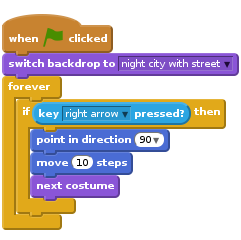
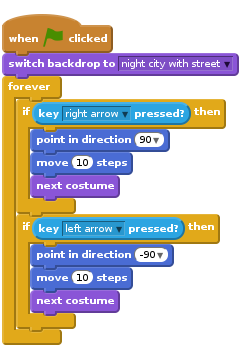
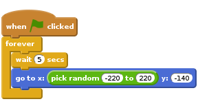
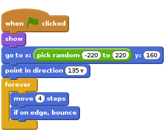
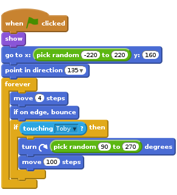
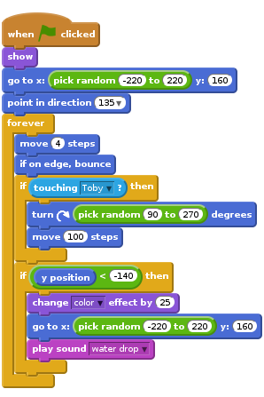
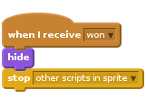
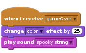
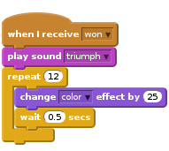
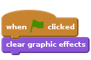

Heads Up!
This project is new. That means we’re still testing it, and there’s a small chance there could be some bugs or typos. If you’re a club leader trying out this project, please complete this short questionnaire (or email ) to let us know how it went!
Introduction
In this project, we are going to create a game in which Toby the dog has to collect 5 cheese-puffs bowls to win, whilst preventing balls from falling on the floor.
If Toby drops more than 2 balls, the game is over. So the question is: can you keep all the balls in the air?

Step 1: Controlling Toby
Activity Checklist
Start a new Scratch project. Delete the cat by right-clicking it and selecting Delete.
Click on the stage. Choose a backdrop from the Scratch library: the night city with street backdrop is a good choice for this project. Delete the original blank backdrop.
Add a new sprite. select the Dog2 sprite from the Animals section.
Dog2 comes with three costumes. Delete the third costume dog2-c as we only want the first two.
Click on the blue
ibutton to the top left of the sprite picture. Rename the sprite TobySelect the
left-right rotation styleas shown on the picture below:
We want Toby to move right when we press the right arrow key. Click on the scripts tab, and add this script:

Click on the Green Flag, and check that Toby can move right when you press the right arrow key. Now we need to add more code to allow Toby to move left as well. Add this to your script:

Test Your Project
Click the green flag, press the left arrow key. Does Toby move left ? Now try the right arrow key!
Save your project
Step 2: Keeping Toby busy!
Now that Toby can move, let’s give him something to do. In order to win the game, Toby must collect 5 cheese-puffs bowls. We need the bowls to appear randomly at different times and places.
Activity Checklist
Add a new sprite from the library: select the cheesy-puffs from the Things category, and rename it bowl.
Click on the Costumes tab and reduce the size of the cheese-puffs bowl by clicking on the shrink icon at the top near the scissors. You then need to click on the bowl sprite to make it smaller. The shrink icon looks like this:

If you used a different method to resize the bowl, you may need to reset the centre of the costume so that it is at the centre of the bowl. To do this, click on the Set costume centre icon at the top right corner, and move the crosshair as shown on the picture below:

The cheesy-puffs need to appear in random places on the pavement. The
y positionwill remain the same, but thex positionneeds to change so that the bowl sometimes appears on the right, on the left, or in the middle. Add the following script to the bowl sprite:
Click the green flag, and wait for a bit. Does the cheese-puffs bowl keep moving to different places every 5 seconds?
At the moment, the game is too predictable! Let’s make it more difficult by hiding the bowl from time to time. Modify the script in the following way:

Test Your Project
Click the green flag, the cheese-puffs bowl should now appear for random lengths of time, and in random places.
Save your project
Step 3: Counting the bowls
In order to win the game, Toby must collect 5 cheese-puffs bowls.
Activity Checklist
Create a
bowlsvariable to keep track of how many bowls Toby has collected so far.
Now we need to add some code to keep track of how many bowls Toby has collected so far. Each time that Toby touches a cheese-puffs bowl, the
bowlsvariable needs to be increased by 1. So add this script to the cheese-puffs bowl sprite. (Make sure that you keep the previous script as well! We need both scripts)![when FLAG clicked
set [bowls v] to (0)
forever
if <touching [Toby v]?> then
change [bowls v] by (1)
wait (0.5) secs
hide
end
end](0fda36705c784942c9ace82711cfe6852a8fb4be.png)
The game should be stopped when the number of bowls collected reaches 5. We are going to broadcast a new message called
wonto the other sprite and the background to let them know that the player has won.
Modify your second script so that it looks like this:![when FLAG clicked
set [bowls v] to (0)
forever
if <touching [Toby v]?> then
change [bowls v] by (1)
if <(bowls) = (5)> then
broadcast [won v]
stop [other scripts in sprite v]
end
wait (0.5) secs
hide
end
end](c70fc6a7eac30b8fec8976d7b421697426c9a093.png)
Add a small script for Toby so that he says ‘well done!’ when he receives the
wonmessage:![when I receive [won v]
say [Well done !] for (2) secs](731f5f4c76e7f39bca72602b253fb5699789cc0a.png)
Test Your Project
Click the green flag, does the bowls variable increase each time the dog collects a bowl? Does Toby say “well done” once 5 bowls have been collected?
Save your project
Challenge 1: Adding sound
Can you add some code to play a pop sound each time a bowl is collected?
Can you add a small script for the background so that it changes and plays music when the player wins?
Hint: You will need to add a script for your stage starting with a when I receive won block
Save your project
Step 4: Adding a bouncing ball
Let’s make the game a bit more exciting by adding a bouncing ball!
Toby has to catch the ball. If Toby drops 3 balls before he has time to collect his 5 bowls of cheese-puffs, the game is over!
Activity Checklist
Add a new sprite: select the Beachball from the Scratch library.
Shrink the Beachball. Make sure that the centre of the costume is set correctly, i.e. at the centre of the ball. You can check this by clicking on the Set costume centre icon, located at the top right corner in the Costumes tab. It is important to set the centre correctly, as it will affect the way the ball moves.
Now we need this ball to fall from the sky, and bounce everywhere. Add the following script to your ball:

Test Your Project
Click the green flag, your ball should fall from the sky and bounce off the edges of the background. Which number do you need to modify to make the ball bounce faster or slower?
Save your project
Step 5: Add more bounce
But the problem is: nothing happens when Toby touches the ball. Let’s fix this!
Activity Checklist
Modify your script so that when the ball touches Toby, it bounces off as well:

We also need to add some code to detect when the ball touches the floor. The ball seems to be touching the floor when its
y positionis less than 140. This is an approximate number, and you may need to adjust it, especially if you have chosen a different background.
We are going to modify the script so that the ball moves back to the top (and changes colour) as soon as it is dropped. Import the water drop sound, and modify your script again:
Test Your Project
Click the green flag, what happens when the ball is dropped ?
Can you see a new ball falling from the top? Is it a different colour?
Save your project
Step 6: Counting the dropped balls
Activity Checklist
We now need to keep track of how many balls Toby has dropped so far. To do this, create a variable for all sprites called
droppedBalls.
When we start the game, Toby has not dropped any balls yet, so we need to initialise the
droppedBallsvariable to 0. Each time the balls touches the floor, thedroppedBallsvariable needs to be increased by 1.
When the number of dropped balls is more than 3, the game is over, so we will broadcast a new message calledgameoverto tell the other sprites and the background that the game is over, and the player has lost. Your Beachball script should now look like this:![when FLAG clicked
set [droppedBalls v] to (0)
show
go to x:(pick random (-220) to (220)) y:(160)
point in direction (135 v)
forever
move (4) steps
if on edge, bounce
if <touching [Toby v]?> then
turn right (pick random (90) to (270)) degrees
move (100) steps
end
if <(y position) < (-140)> then
change [droppedBalls v] by (1)
if <(droppedBalls) = (3)> then
broadcast [gameOver v]
hide
stop [this script v]
end
change [color v] effect by (25)
go to x:(pick random (-220) to (220)) y:(160)
play sound [water drop v]
end
end](794fa5809de4d54ce2a41af60dc5a1d905c4ca6f.png)
When the players wins, the game should stop, and the ball should stop bouncing and hide:

Add this script to your bowl sprite to stop it from appearing when the game is over:
![when I receive [gameOver v]
stop [other scripts in sprite v]](91196e0062f11ff02a250a563f3f1293f84c36e7.png)
Click on the stage. Then click on the Sounds tab, and import the spooky string sound from the Scratch library, and the triumph sound.
Add this script to the stage so that it plays a spooky string sound when the game is over:

Add this script to the stage so that it changes colour several times and plays a triumph sound when the player wins:

Finally, add this script to make sure the colour of the stage comes back to normal when the game is restarted.

Test Your Project
Click the green flag, does the droppedBalls variable increase each time a ball is dropped? Test your game in as many ways that you can think of (winning and losing for example) Does it work as expected?
Save your project
Challenge 2: make the game more challenging
What could you do to make the game more challenging? Here are some suggestions:
- Make the bowls hide more quickly, and for longer. Which parameters do you need to modify to achieve this?
- Make the ball move a lot faster, or add another ball: maybe it could be a basketball this time. You can copy the script from the beach ball onto the basketball using drag and drop, there is no need to rewrite the whole script…
- You could make a level 2 for your game, with a different background, and more balls bouncing around. Instead of collecting cheese-puffs bowls, Toby could this time collect some donuts. (There is a donut sprite in the Scratch library). You could create a
levelvariable to keep track of the level you’re currently playing.
Save your project
Well done, you have finished! Now you can enjoy your game!
Don’t forget you can share your game with all your friends and family by clicking on Share on the menu bar!